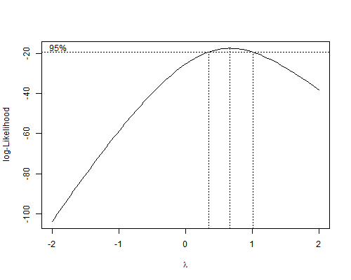

{% include r.css %}


<div id="c2s10" class="section level2 first">
<h2 class="first">2.10 Transforming the Data</h2>
<p>The final section in this chapter deals with Box-Cox transformations.
As usual, we start by reading the data and recreating the variables
needed. To avoid problems with negative values of the response variable,
we add 1/2 to all observations.</p>
<pre class="r"><code>&gt; library(dplyr)
&gt; fpe &lt;- read.table(&quot;https://grodri.github.io/datasets/effort.dat&quot;)
&gt; fpe &lt;- mutate(fpe, y = change + 0.5,
+   effort_g = cut(effort, breaks=c(min(effort), 5, 15, max(effort)), 
+   right=FALSE, include.lowest=TRUE, labels=c(&quot;Weak&quot;,&quot;Moderate&quot;,&quot;Strong&quot;)))</code></pre>
<div id="the-box-cox-transformation" class="section level3">
<h3>The Box-Cox Transformation</h3>
<p>We will determine the optimal transformation for the analysis of
covariance model of <a href="c2s8">Section 2.8</a>.</p>
<p>Venables and Ripley’s MASS library has a handy boxcox function, that
computes and plots the profile log-likelihood for a range of possible
transformations, going from -2 to 2. The main argument to the function
is a linear model fit. We’ll try it with the analysis of covariance
model of <a href="c2s8">Section 2.8</a>, that treats setting linearly
and effort as a factor with three levels:</p>
<pre class="r"><code>&gt; library(MASS)</code></pre>
<pre><code>Warning: package &#39;MASS&#39; was built under R version 4.2.2</code></pre>
<pre><code>
Attaching package: &#39;MASS&#39;</code></pre>
<pre><code>The following object is masked from &#39;package:dplyr&#39;:

    select</code></pre>
<pre class="r"><code>&gt; bcm &lt;-lm(y ~ setting + effort_g, data=fpe)
&gt; png(&quot;fig28r.png&quot;, width=500, height=400)
&gt; bc &lt;- boxcox(bcm)
&gt; dev.off()</code></pre>
<pre><code>png 
  2 </code></pre>
<p></p>
<p>As you can see from the graph, the optimal transformation has a
parameter somewhat below 1, suggesting something like a square root
transformation, but the profile log-likelihood is rather flat near the
maximum, and leaving the data untransformed does not lower the
log-likelihood significantly.</p>
<p>The boxcox function returns a list with <code>x</code> as the
parameter and <code>y</code> as the corresponding log-likelihood. We can
find the approximate mle as the x-value that yields the maximum:</p>
<pre class="r"><code>&gt; bc$x[bc$y == max(bc$y)]</code></pre>
<pre><code>[1] 0.6666667</code></pre>
<p>So the optimal transformation is actually 0.67. In general I prefer
to take this procedure has providing general guidance, and would pick
something closer to reciprocals, logs, no transformation or squares,
which correspond to values of -1, 0, 1 and 2, respectively. If one
insisted on transforming the data, taking square roots would probably be
best.</p>
<p>A large sample test for no transformation compares the
log-likelihoods at one and at the maximum. Unfortunately 1 is not one of
the generated x-values, but we can call the <code>boxcox()</code>
function with a single parameter value to just evaluate the
log-likelihood:</p>
<pre class="r"><code>&gt; bc1 &lt;- boxcox(bcm, lambda=1, plotit=FALSE)
&gt; -2*(bc1$y - max(bc$y))</code></pre>
<pre><code>[1] 3.645258</code></pre>
<p>The chi-squared value 0f 3.65 is below the five-percent critical
value, showing that we have no evidence against leaving the data in the
original scale. To test for a log transformation you could use the same
procedure, but it is clear from the graph that using logs would produce
a substantially lower log-likelihood than leaving the data as they
are.</p>
</div>
<div id="atkinsons-score-test" class="section level3">
<h3>Atkinson’s Score Test</h3>
<p>Our final calculation involves Atkinson’s score test, which requires
fitting the auxiliary variable given in Equation 2.31 in the notes. We
compute the geometric mean, storing it in a scalar called
<code>gmean</code>, use this to compute the auxiliary variable
<code>atkinson</code>, and then fit the extended model:</p>
<pre class="r"><code>&gt; gmean &lt;- exp(mean(log(fpe$y)))
&gt; fpe &lt;- mutate(fpe, atkinson = y * (log(y/gmean) - 1))
&gt; lm(change ~ setting + effort_g + atkinson, data=fpe)</code></pre>
<pre><code>
Call:
lm(formula = change ~ setting + effort_g + atkinson, data = fpe)

Coefficients:
     (Intercept)           setting  effort_gModerate    effort_gStrong          atkinson  
         -3.8582            0.1970            3.7850           11.6664            0.5916  </code></pre>
<p>The coefficient of the auxiliary variable is 0.59, so the optimal
power is approximately 1-0.59 = 0.41, suggesting again that something
like a square root transformation might be indicated. The associated
<em>t</em>-statistic is significant at the two percent level, but the
more accurate likelihood ratio test statistic calculated earlier was
not. Thus, we do not have strong evidence against keeping the response
in the original scale.</p>
<p><em>Exercise 1:</em> Try the Box-Tidwell procedure described in
Section 2.10.4 of the notes to see if a transformation of social setting
would be indicated.</p>
<p><small>Updated fall 2022</small></p>
</div>
</div>
